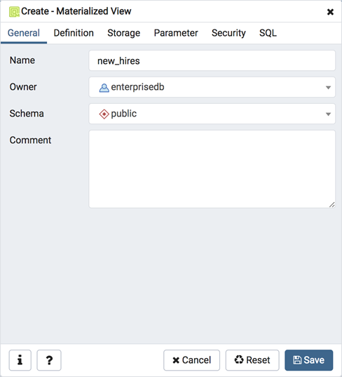
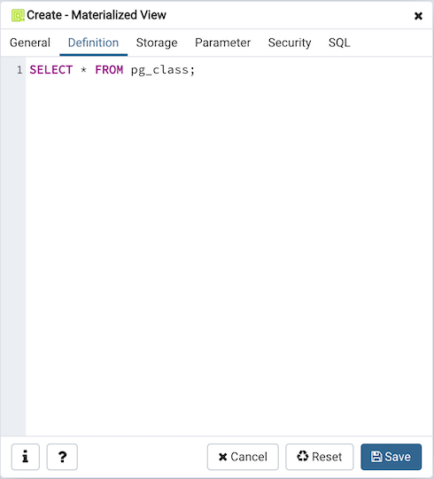
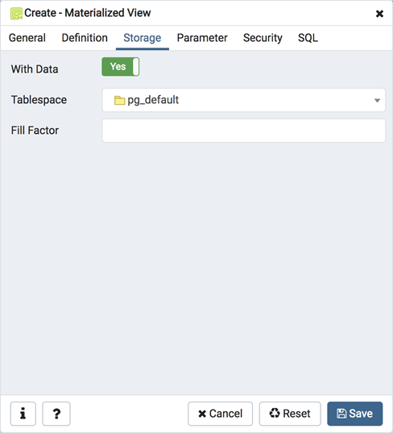
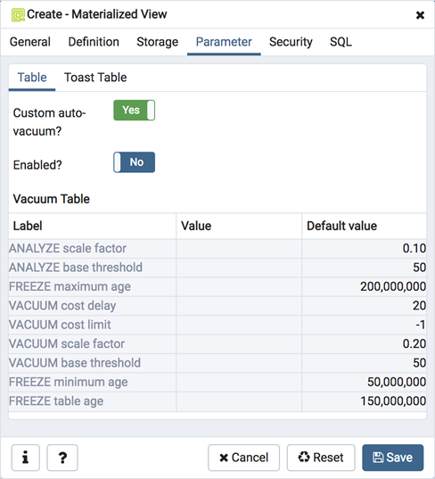
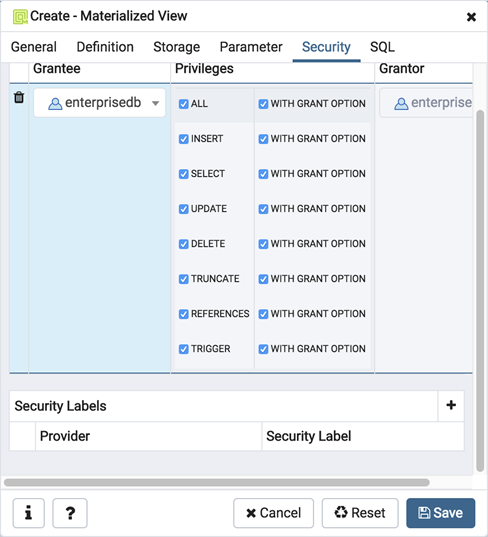
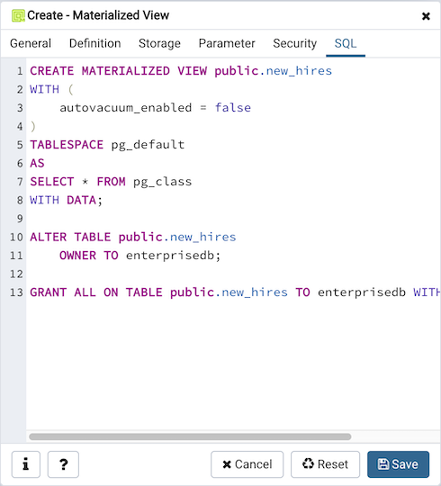

Materialized View Dialog¶
Use the Materialized View dialog to define a materialized view. A materialized view is a stored or cached view that contains the result set of a query. Use the REFRESH MATERIALIZED VIEW command to update the content of a materialized view.
The Materialized View dialog organizes the development of a materialized_view through the following dialog tabs: General, Definition, Storage, Parameter, and Security. The SQL tab displays the SQL code generated by dialog selections.
Use the fields in the General tab to identify the materialized view:
Use the Name field to add a descriptive name for the materialized view. The name will be displayed in the pgAdmin tree control.
Use the drop-down listbox next to Owner to select the role that will own the materialized view.
Select the name of the schema in which the materialized view will reside from the drop-down listbox in the Schema field.
Store notes about the materialized view in the Comment field.
Click the Definition tab to continue.
Use the text editor field in the Definition tab to provide the query that will populate the materialized view. Please note that updating the definition of existing materialized view would result in loss of Parameter(Table, Toast), Security(Privileges & Security labels), Indexes and other dependent objects.
Click the Storage tab to continue.
Use the fields in the Storage tab to maintain the materialized view:
Move the With Data switch to the Yes position to specify the materialized view should be populated at creation time. If not, the materialized view cannot be queried until you invoke REFRESH MATERIALIZED VIEW.
Use the drop-down listbox next to Tablespace to select a location for the materialized view.
Use the Fill Factor field to specify a fill factor for the materialized view. The fill factor for a table is a percentage between 10 and 100. 100 (complete packing) is the default.
Click the Parameter tab to continue.
Use the tabs nested inside the Parameter tab to specify VACUUM and ANALYZE thresholds; use the Table tab and the Toast Table tab to customize values for the table and the associated toast table. To change the default values:
Move the Custom auto-vacuum? switch to the Yes position to perform custom maintenance on the materialized view.
Move the Enabled? switch to the Yes position to select values in the Vacuum table. Provide values for each row in the Value column.
Click the Security tab to continue.
Use the Security tab to assign privileges and define security labels.
Use the Privileges panel to assign privileges to a role. Click the Add icon (+) to set privileges for the materialized view:
Select the name of the role from the drop-down listbox in the Grantee field.
Click inside the Privileges field. Check the boxes to the left of one or more privileges to grant the selected privilege to the specified user.
The current user, who is the default grantor for granting the privilege, is displayed in the Grantor field.
Click the Add icon (+) to assign additional privileges; to discard a privilege, click the trash icon to the left of the row and confirm deletion in the Delete Row popup.
Use the Security Labels panel to define security labels applied to the materialized view. Click the Add icon (+) to add each security label selection:
Specify a security label provider in the Provider field. The named provider must be loaded and must consent to the proposed labeling operation.
Specify a a security label in the Security Label field. The meaning of a given label is at the discretion of the label provider. PostgreSQL places no restrictions on whether or how a label provider must interpret security labels; it merely provides a mechanism for storing them.
Click the Add icon (+) to assign additional security labels; to discard a security label, click the trash icon to the left of the row and confirm deletion in the Delete Row popup.
Click the SQL tab to continue.
Your entries in the Materialized View dialog generate a SQL command (see an example below). Use the SQL tab for review; revisit or switch tabs to make any changes to the SQL command.
Example¶
The following is an example of the sql command generated by user selections in the Materialized View dialog:
The example shown creates a query named new_hires that stores the result of the displayed query in the pg_default tablespace.
Click the Info button (i) to access online help.
Click the Save button to save work.
Click the Cancel button to exit without saving work.
Click the Reset button to restore configuration parameters.